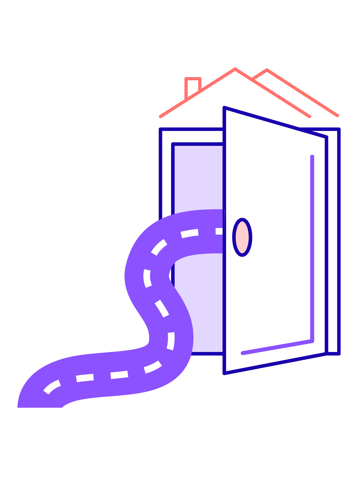

PATHS
The PATHS Project is an 18-month NDA-funded research initiative exploring how housing conditions impact the health, wellbeing, dignity, and everyday lives of disabled Travellers in Ireland. Through collaborative workshops and engagement with disabled Travellers, families, carers, and advocacy organisations, the project aims to document lived experiences and co-create practical, culturally appropriate recommendations for policy and service improvement.

Accessible housing starts with who it's designed for
Members of the Traveller community continue to face significant barriers to safe, appropriate, and accessible accommodation across Ireland — barriers that are often compounded for those who are also disabled or have additional support needs. PATHS was set up to understand these barriers directly from the people experiencing them, and to work alongside Traveller-led organisations, service providers, and local authorities to identify practical, achievable improvements.
Aim 1
Understand current barriers to accessible housing and services for the Traveller community, from lived experience.
Aim 2
Co-design practical recommendations with the community, service providers, and local authorities.
Aim 3
Produce outputs that are usable by the people who can act on them, in plain and accessible language.
Workshops & research in practice
A couple of images from our workshops and site visits will sit here.